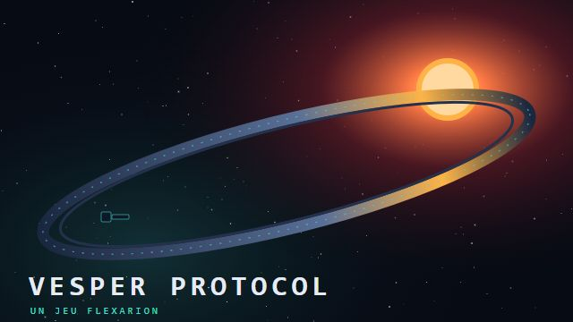
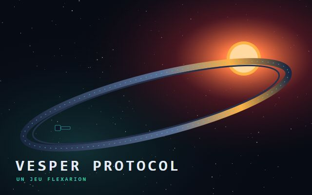
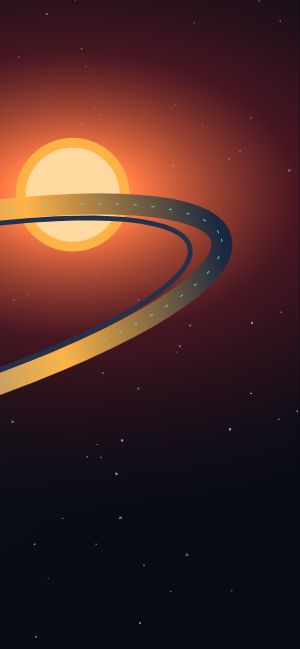
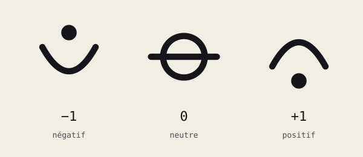
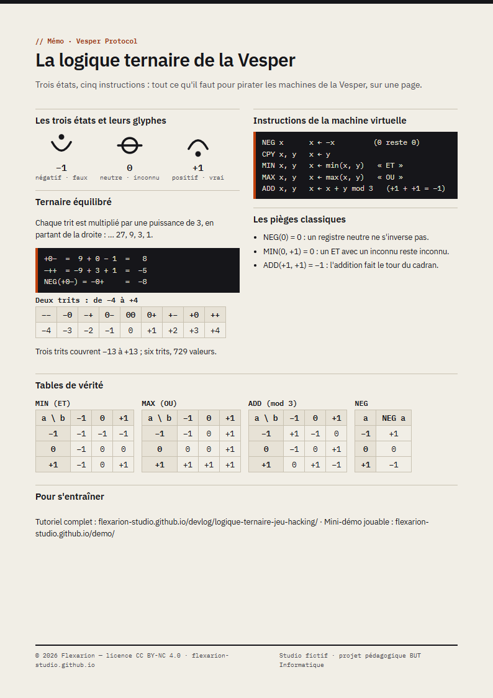

Ressources gratuites
Fonds d'écran, glyphes et mémo de Vesper Protocol à télécharger
Des fonds d'écran du key art, les glyphes ternaires de la Vesper et un mémo d'une page sur la logique ternaire. Gratuits pour un usage non commercial : il suffit de créditer Flexarion.
Fonds d'écran
La Vesper en orbite autour de Tau-Héliade, en JPEG haute qualité.








Les glyphes ternaires de la Vesper
Dans Vesper Protocol, chaque trit s'affiche sous forme de glyphe alien. Les voici en SVG vectoriel, pour un fan-art, un cosplay, un tatouage éphémère ou un cours sur la logique ternaire.

- Planche des trois glyphes (SVG)
- Glyphe −1, négatif (SVG)
- Glyphe 0, neutre (SVG)
- Glyphe +1, positif (SVG)


Mémo : la logique ternaire sur une page

Glyphes, ternaire équilibré, instructions de la machine virtuelle, pièges classiques et tables de vérité de MIN, MAX, ADD et NEG. Format A4, prêt à imprimer pour un TD ou une séance de club.
Télécharger le mémo (PDF, 95 Ko)
Pour pratiquer : la mini-démo jouable et la fiche logique ternaire du codex.
Comment créditer
Ces ressources sont sous licence CC BY-NC 4.0 : vous pouvez les partager et les modifier, sans usage commercial, à condition de créditer Flexarion avec un lien. Copiez simplement ce code sous votre visuel :
Sur un réseau social, écrivez simplement « Visuel : Flexarion (flexarion-studio.github.io) ». Le logo et les captures du jeu sont dans le presskit.